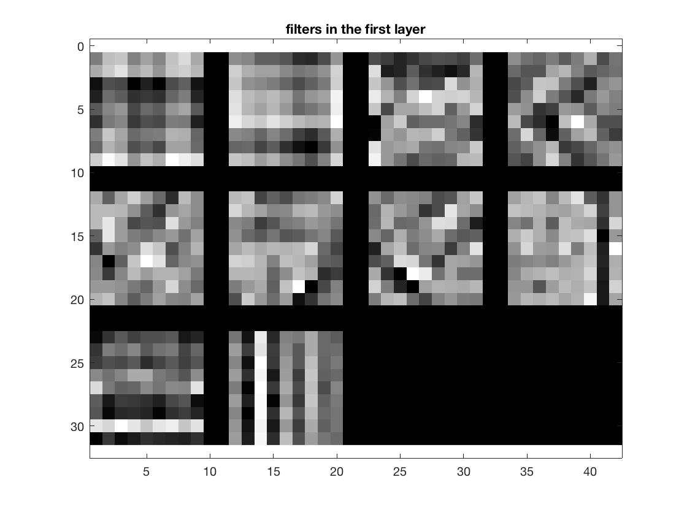
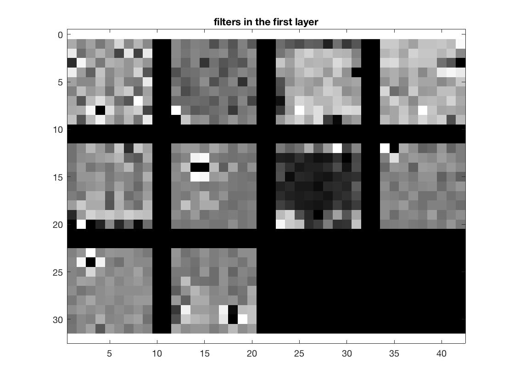

Project 6 / Deep Learning
Goal
Design and train deep convolutional networks for scene recognition using the MatConvNet toolbox.
- Train a deep convolutional network from scratch to recognize scenes.
- Use the pretrained VGG-F network to achieve more than 85% accuracy on the task.
Part 1: training a deep network from scratch.
Baseline
The starter code has a simple baseline network with 4 layers, without any tuning, we can recognize scenes with about 25% accuracy on the 15 scene database:
The testing error is much higher than training error, it is overfitting to the training data.
Jitter some data
I randomly left-right flip half of the images to increase the amount of training data.
Zero-center the images
I first subtracted each image by its own mean, that did increase the accuracy, since it is also a form of normalization. And then instead that I subtracted each image by the average of all training images, that performed better than former method with 2% more accuracy.
Use dropout regularization
I insert a dropout layer before the last convolutional layer, to regularize the network. That randomly cuts out network connections at training time, makes test accuracy increase a lot (more than 10%).
Make the network deeper
I add an additional convolutional layer and another max-pool layer and relu layer to make the network deeper.
Batch normalization
And I also add a batch normalization layer after each convolutional layer except for the last one, and then use a higher learning rate(0.001) to achieve higher accuracy.
After all these adjustments above, the "lowest validation error" I gain is 0.438, which means the accuracy is 56.2% (learningRate = 0.001, numEpochs = 100):
|  |
I also tried other improvements such as inconstant learningRate, working with the higher resolution images, alternating loss layers and simply increasing numEpochs. And the highest accuracy achieved is 59.87% (resolution = 128*128, loss layer = "hinge loss", learningRate = 0.001, numEpochs = 100):
Part 2: fine-tuning a pre-trained deep network
For part 2, instead training a new network I use the pre-trained VGG-F network and fine-tune it to perform scene recognition. I first replace the final two layers, fc8 and the softmax layer with a new fc8 and softmax layer, and set the new fc8 layer's output depth to 15. Then add a dropout layer between fc6 and fc7 and between fc7 and fc8. Since VGG-F accepts 3 channel (RGB) images, I also concatenate the grayscale images in 15 scene dataset with themselves to make RGB images. And use net.meta.normalization.averageImage to normalize these images.
After that, I set learningRate to 0.0001 and numEpochs to 4, then the accuracy achieved is 86.27%:
 |
 |
Then I raise numEpochs to 15, and the highest accuracy I get is 88.33%:
 |
 |
SUN database
Here I use additional scene training data: the SUN397 database to train a network from scratch. Since each category in the SUN397 contains at least 100 images, I randomly select 50 images per category as training data and another 50 images as testing data. In order to compare with the performance of the 15 scene database, I first chose 15 categories from the SUN397 database, and use them to train a network using the similar method in part1, but it is heavily overfitting: validation error is very high with low train error:
Then I use all 397 categories to train a new network, validation error and train error are both rather low. Train error drops constantly(slightly though) and validation error almost stays at the same level:
 |
 |
The reason I think is the big noise in data, image number of each category is too small to fight overfitting, even I flip some of them increase the amount of training data.
Then I use the learned network to test the 15 scene database, the result is surprisingly good:
(/ /training data: 397 categories from SUN database/ /number of network layers: 11/ /learningRate: 0.001/ /accuracy:54.67% )
(/ /training data: 397 categories from SUN database/ /number of network layers: 11/ /learningRate: 0.001/ /accuracy:52.73% )